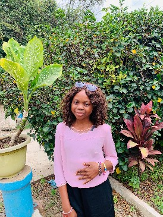

Etudiante a l'universite de don Bosco et passionner par le web

Bonjour je m'appelle Kalond Mariette et je suis une etudiante dynamique et motive en informatique a l'UDBL. Passionne par le developpement web,l'intelligence artificielle,et le design graphique ,je suis constamment a la recherche de nouvelle opportunites d'apprentissage et de defis stimulant. Au cours de mes etudes ,j'ai develope des solides competences en programmation. je suis une personne rigoureuse, creative et j'aime travailler en equipe pour atteindre des objectifs communs. Mon objectif est de contribuer a des projets innovants,trouver un stage, et maitriser le Fromework Laravel.
| CATEGORIE | COMPETENCE | NIVEAU |
|---|---|---|
| programmation | HTMLM,CSS,JAVAscript,Python | Avancé |
| design | Figma,photoshop(bases) | Intermediaire |
| Langue | Francais(natif),Anglais(fluide) | Avance |
| Outils | Git,Vs code,suite office | Avancé |
| soft skils | communication,Resolution de probleme,Autonomie | Expert |